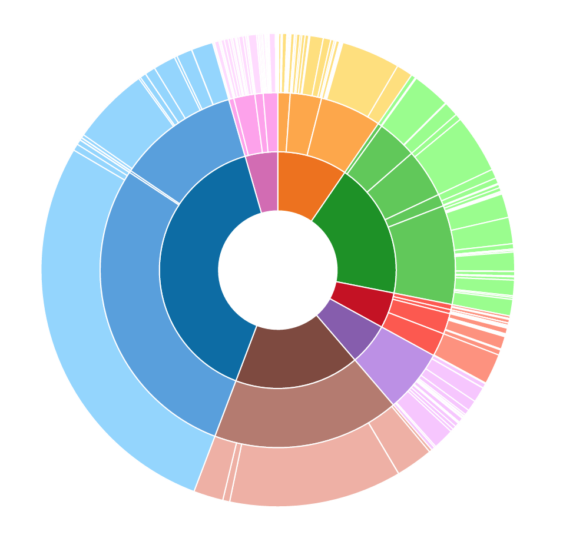

Client-Side Web Development
September 03, 2024
About the Book

About the Book
This book covers the the skills and techniques necessary for creating sophisticated and accessible interactive web applications. It focuses on the client-side languages, tools, and libraries that professionals use to build the web sites you use every day. It assumes a basic background in computer programming (e.g., introductory programming in Java or Python), and some concepts from the technical foundations of informatics). These materials were developed for the INFO 340: Client-Side Web Development course taught at the University of Washington Information School; however they have been structured to be an online resource for anyone who wishes to learn web programming.
 This book is licensed under a Creative Commons Attribution-NonCommercial-ShareAlike 4.0 International License.
This book is licensed under a Creative Commons Attribution-NonCommercial-ShareAlike 4.0 International License.
This book is open source. Visit us on GitHub to contribute improvements.
Acknowledgements
Some chapters originally authored by and Mike Freeman. Some content was originally adapted from tutorials by David Stearns. Some structure and explanations inspired by Learning Web Design by Jennifer Robbins.